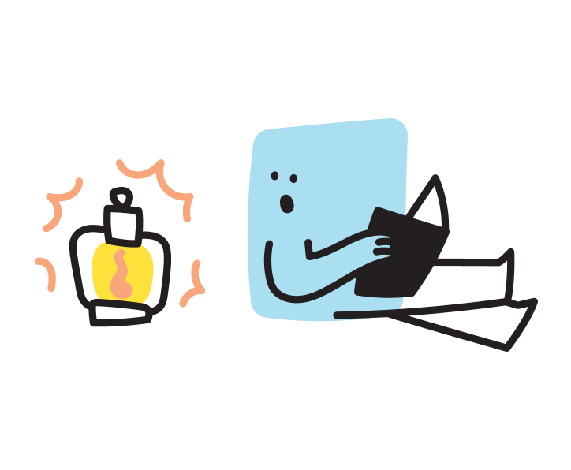

Hello! You're three weeks in - around now is when the novelty dip happens. If the journal sat untouched for a day or two, that's completely normal. Don't chase it; the streak chart and this week's starters usually pull them back on their own.
Dinner-table opener: "What was behind the door in Monday's story?" - asking about the story, not the writing, is the trick. They'll tell you everything.

If they'll let you, read their story back to them in your most dramatic voice. Being taken that seriously - funny voices and all - does more for a young writer's confidence than any correction ever will.
Spelling sorts itself out with mileage. At this stage, momentum is everything - ideas first, tidiness later.
Sticker check!
If they finished five stories this week, that's the Story Master sticker. Let them peel it - never do it for them. That's the whole ceremony.